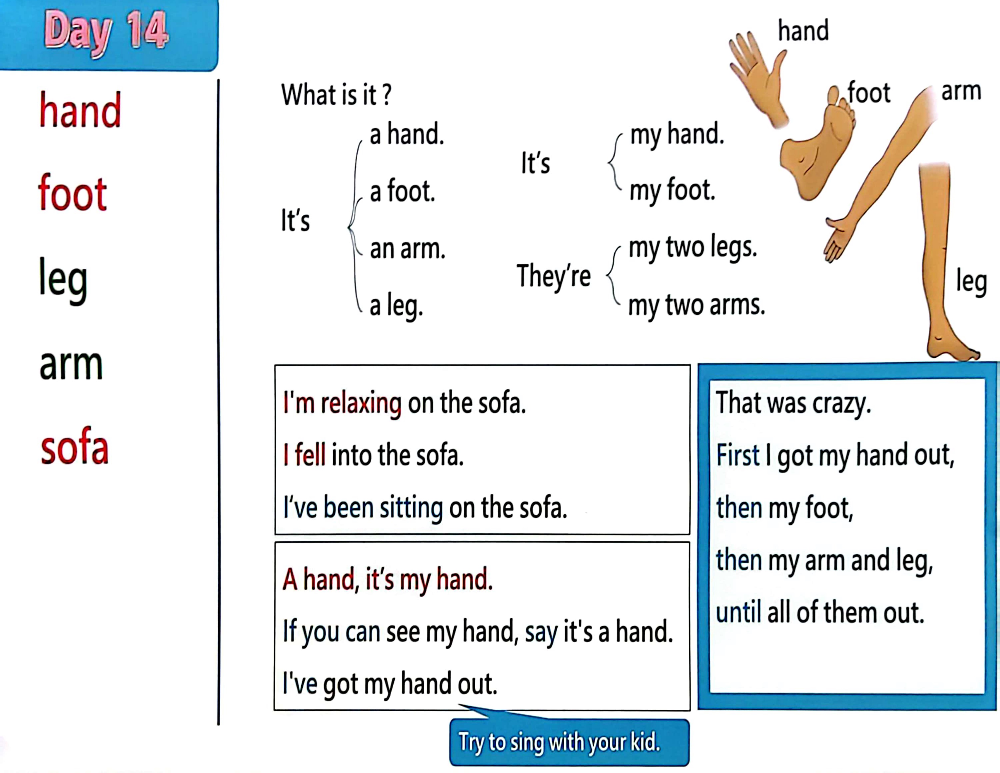

Day 14
Unit 5 · story
教材重点
教材重点依据网盘文件“第二级蓝色每日打卡全.pdf”，第 15 页对应 Day 14；保留文字整理并同时提供原图。
网盘教材重点原图 · PDF 第 15 页对应 Day 14
an arm. a foot. What i s i t ? I t’s a hand. hand foot l eg arm sofa a l eg. I ' m relaxing on the sofa. I fell i nto the sofa. I ‘ve been sitting on the sofa. I t’s my foot. my hand. They’re my two arms. my two l egs. A hand, i t’s my hand. I f you can see my hand, say it's a hand. I ' ve got my hand out. That was crazy. First I got my hand out, then my foot, then my arm and l eg, until all of them out. Try to sing with your kid. foot hand l eg arm

Unit 5 · story · 4–6岁
hello · say · see · look
Hello, hello, hello, hello, everyone. Hello. Hello.
台词本为机器转写，可能存在识别误差；不等同于视频逐字原声。
详细内容
Part 1 核心词汇
必须掌握 · 4 个Part 2 跟读句型与句型拓展
左侧保留台词本原句，右侧为替换练习；拓展内容不是视频逐字台词。
Hello, hello, hello, hello, everyone. Hello. Hello.
Everyone, hello. Hello.
Everyone say, hello. Everyone.
Hand, foot.
Arm and leg, bye, bye, stave, see you, hello, hello, boys and girls. Hi.
Part 3 台词本全文
来源：第2级台词本 · 014.Wow!Blue - Unit 5 - part 1 story_5_1.pdf。以下保留网盘 PDF 的机器转写文本，仅清理了文件路径页眉和空行。
Hello, hello, hello, hello, everyone. Hello. Hello.
Everyone, hello. Hello.
Everyone say, hello. Everyone.
Hand, foot.
Arm and leg, bye, bye, stave, see you, hello, hello, boys and girls. Hi.
Maggie's gone out, and I'm relaxing on the sofa. Oh, I'm so sleepy, oh, no help, oh,
Oh no, I'm in the sofa. Oh, oh,
Look, it's my hand, my hand.
If you can see my hand, say it's a hand.
It's a hand, yeah, it's a hand.
Okay, oh,
Let me try, oh, oh, what's next. Oh yes. Hey, look, my foot.
I've got my foot out.
If you can see it, say it's our foot.
It's our foot come on, it's our foot, and again, it's our foot here.
My hand and my foot are out of the sofa.
Yes. Yep.
Look, it's my arm, my arm. Yeah.
If you can say it, say it's an arm.
It's an arm, yeah, it's an arm, last time it's an arm here.
Okay. Oh, if I get my leg out, yeah,
Look, it's my leg, yeah, my leg.
If you see it, say with it, it's our leg.
It's our leg again.
It's a leg, last time it's a leg here, great, I've got my, my hand.
My foot, my arms and my leg out.
Just a little more. Oh,
Oh, wow.
That was crazy. I fell into the sofa.
First I got my hand out, then my foot.
/
-
/2/014.Wow!Blue - Unit 5 - part 1 story_5_1.txt[2022/3/29
星期二
6:42:40]
Then my arm and leg, until who all of me is out?
Who, hello, hello, maggie, hey,
Have you just been sitting on the sofa here, just sitting on the sofa.
Relaxing, bye, bye, everybody see you next time. Bye. Bye. Bye.
Yeah, bye bye.